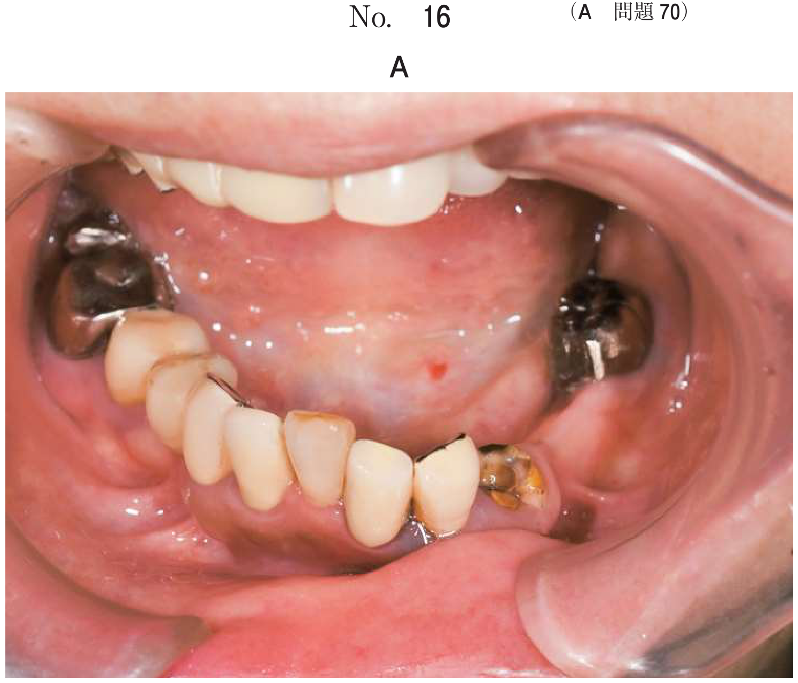
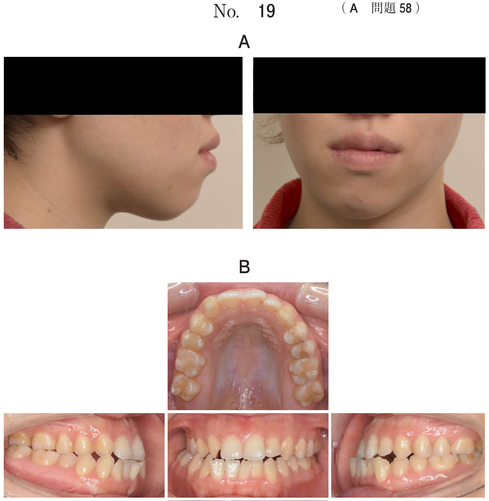

舌接触補助床（PAP）
出題の核
- PAPで改善するもの：嚥下圧、食塊形成能
- 適応：舌運動障害による食物残留、構音障害（カ行）
- 類似装置（PLP、スピーチエイド等）との鑑別
PAP（舌接触補助床）とは
PAP（Palatal Augmentation Prosthesis）は、口蓋に床を付与することで舌の口蓋への接触を補助する装置。
メカニズム
- 舌の萎縮や運動障害により固有口腔容積が相対的に増大
- → 舌と口蓋の接触が不十分になる
- → 咀嚼・嚥下・構音に障害が生じる
- PAPで口蓋を厚くし、舌との距離を縮めて接触を補助
適応
- 舌切除後
- 舌萎縮（ALS：筋萎縮性側索硬化症 など）
- 舌運動障害（脳血管障害後遺症 など）
PAPによって改善するもの
| 改善項目 | 機序 |
|---|---|
| 嚥下圧 | 舌と口蓋の接触により嚥下時の圧が上昇 |
| 食塊形成能 | 舌による食物の押しつぶし・まとめが可能に |
| 構音機能 | 特にカ行（舌背と口蓋の接触）が改善 |
| 食物移送 | 口腔から咽頭への送り込みが改善 |
類似装置との鑑別
| 装置 | 英語名 | 目的 | 適応 |
|---|---|---|---|
| PAP （舌接触補助床） |
Palatal Augmentation Prosthesis | 舌の口蓋接触を補助 | 舌運動障害、舌萎縮 開鼻声なし |
| PLP （軟口蓋挙上装置） |
Palatal Lift Prosthesis | 軟口蓋を挙上 | 鼻咽腔閉鎖不全 開鼻声あり |
| スピーチエイド | Speech Aid | 構音機能の回復 （鼻咽腔閉鎖を補助） |
開鼻声を伴う構音障害 |
| オブチュレーター | Obturator | 欠損部の閉鎖 | 口蓋裂、上顎欠損 |
鑑別のポイント
- 開鼻声なし＋カ行不明瞭＋食物残留 → PAP
- 開鼻声あり → PLP または スピーチエイド
- 口蓋に穴がある（欠損） → オブチュレーター
過去問
112A78
68歳の男性。食事中にむせることを主訴として来院した。6か月前から脳梗塞後の後遺症に対するリハビリテーションを受けているという。検査の結果、装置を用いて治療を行うこととした。治療に用いた装置の写真（別冊No.24A）と装置装着時の口腔内写真（別冊No.24B）を別に示す。
この装置によって改善するのはどれか。2つ選べ。


a 嚥下圧
b 咬合力
c 口唇閉鎖力
d 食塊形成能
e 鼻咽腔閉鎖機能
b 咬合力
c 口唇閉鎖力
d 食塊形成能
e 鼻咽腔閉鎖機能
正解：a, d
【解説】写真はPAP（舌接触補助床）。脳梗塞後の舌運動障害に対して使用。PAPは舌と口蓋の接触を補助することで嚥下圧と食塊形成能を改善する。咬合力・口唇閉鎖力はPAPと無関係。鼻咽腔閉鎖機能の改善にはPLPを使用。
115A86
81歳の女性。口腔内に食物が残留することを主訴として来院した。3か月前に脳梗塞で救急搬送され、2週前に退院したという。後遺障害として、右手にしびれ感があり、カ行の発音が不明瞭であるが、開鼻声は認めない。咬頭嵌合位での咬合接触状態を印記した義歯の写真（別冊No.32A）と食物の残留部位を示す写真（別冊No.32B）を別に示す。
主訴を改善するために適用するのはどれか。1つ選べ。


a 金属床義歯
b 舌接触補助床
c スピーチエイド
d 軟口蓋挙上装置
e オブチュレーター
b 舌接触補助床
c スピーチエイド
d 軟口蓋挙上装置
e オブチュレーター
正解：b
【解説】脳梗塞後遺症で「食物残留」「カ行の発音が不明瞭」「開鼻声なし」→ 舌運動障害を示唆。開鼻声がないためPLP・スピーチエイドは除外。舌と口蓋の接触を補助するPAP（舌接触補助床）が適応。
関連事項
PAPの作製方法
- 口蓋床（咬合床）を作製
- パラトグラムや超音波検査で舌の接触程度を確認
- 口蓋部分にユーティリティワックスを築盛
- テストフードで嚥下させ、舌の接触程度を確認
- レジンに置き換えて完成